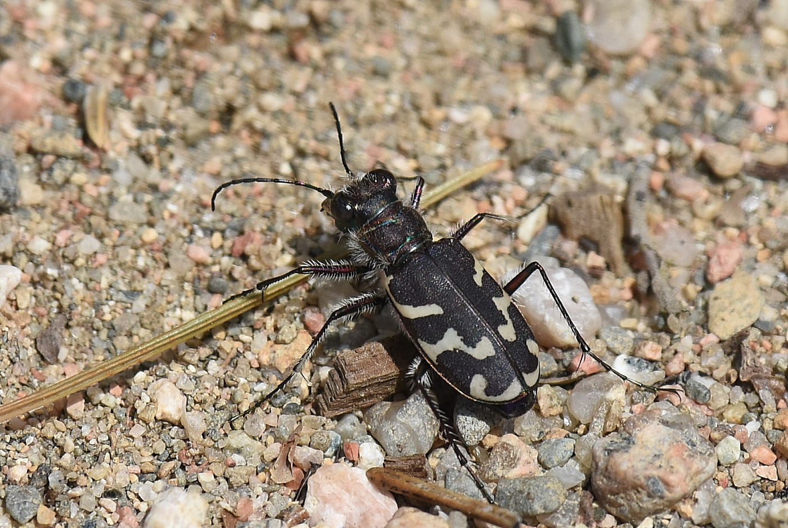

Oblique-lined Tiger Beetle (photo: your name / date or iNaturalist observer)
Identification
- Medium-sized (11–14 mm), dark bronze with oblique white lines on elytra.
- Body shiny; fast on bare ground.
- Distinctive oblique markings separate from other species.
Habitat in New Brunswick
Sandy trails, gravel roads, and open disturbed areas. Prefers dry, sunny bare ground.
Flight Season in NB
May to August (summer peak June-July).
Distribution & Notes
Scattered in southern NB; locally common in suitable habitat. Active during warm months.